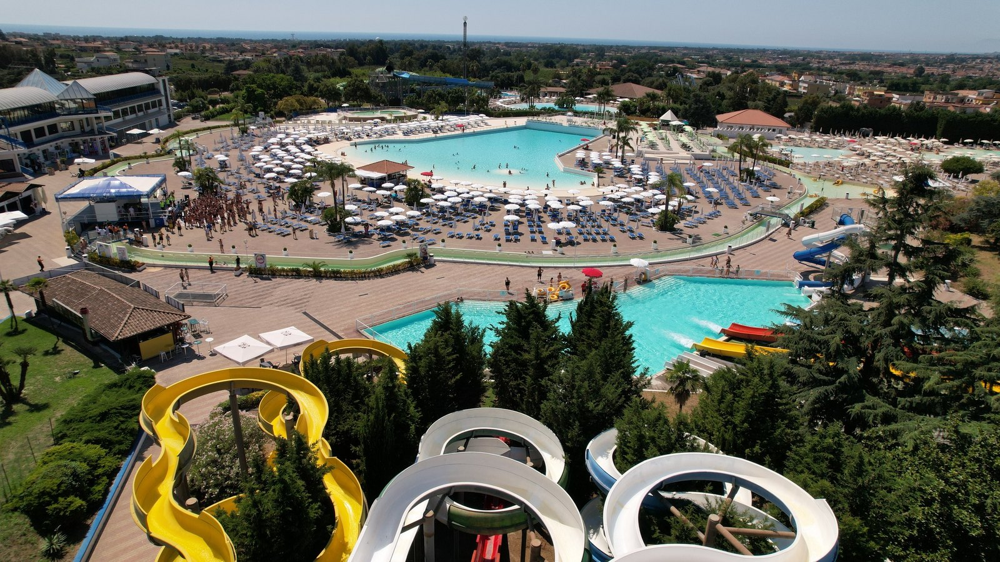
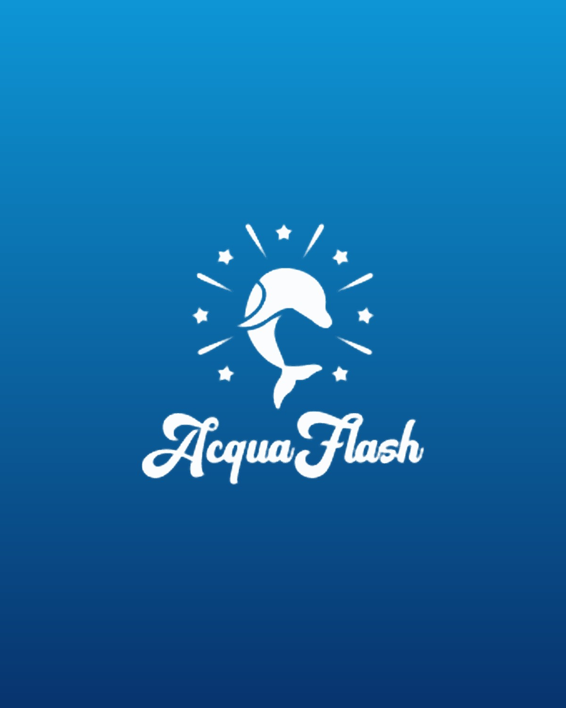

Acqua
Flash

Un parco storico da rilanciare
Acquaflash è un parco acquatico storico del Sud Italia, aperto negli anni ’90. Dopo una serie di fallimenti, l’ultimo nel 2019, è stato rilevato e riqualificato nel 2024 da un imprenditore napoletano e ha riaperto a giugno.
Le condizioni iniziali non erano ottimali, ma il parco è stato rinnovato in fretta, con un ambiente pulito e accogliente. Collaborazioni con realtà locali come O’Talebano Kebab, Porzio e Velvet hanno arricchito l’offerta food.
Un’estate intera di parco
Aperto dal 25 giugno al 15 settembre, con ingresso a 18–20€ al giorno e accesso libero a tutte le attrazioni. Nel weekend animazione per grandi e bambini, e una volta a settimana eventi speciali come lo schiuma party e l’holi fest.
Fiducia, vendite, database
Riqualificare il parco agli occhi del pubblico campano e riguadagnarne la fiducia. Generare vendite online e costruire un database di contatti iscritti alla newsletter.
“Obiettivo di fatturato: un ROI 5 volte l’investimento in marketing.”
Cosa abbiamo fatto
Un team di oltre 15 professionistiL’infrastruttura di comunicazione: sito web, e-mail e primi asset social. Strategie per rispondere al sentiment negativo, definizione del target e della strategia di vendita.
Contenuti social orientati alla vendita, senza perdere la brand awareness. I primi test di vendita con e-mail marketing e advertising su Meta, TikTok e Google.
La più lunga e la più proficua: ottimizzazione di tutto il lavoro fatto, community management quotidiano, contenuti che rispondevano alle critiche e scaling dei budget.

Ridurre le frizioni all’acquisto
Biglietti illimitati a 10€ con l’iscrizione alla newsletter (15€ a Ferragosto), tre tipologie di abbonamenti scontati, promo per le famiglie e una promo in collaborazione con Porzio.
Poi guide e tutorial per acquistare online, un sito con una UX migliorata e le collaborazioni con influencer locali come Cina Emporio e MioNipoteFrancesco.
La strategia adv
Budget distribuito sui risultatiIscrizioni alla newsletter e abbonamenti. Il canale più efficace: qui si è concentrato l’investimento, fino a 500€ al giorno.
Vendita di abbonamenti e biglietti, poi ridotto al minimo indispensabile in base alla marginalità.
Iscrizioni alla newsletter: dopo le fasi di test, la promozione è stata fermata perché meno redditizia.
I risultati
80 giorniUna campagna con 60 post e reel su Meta, 600 stories e 27 TikTok, sempre affiancata da e-mail marketing e dalla promozione costante delle partnership.
 Next project
Lunapark · NapoliEdenlandiaProgetto completo
Next project
Lunapark · NapoliEdenlandiaProgetto completo